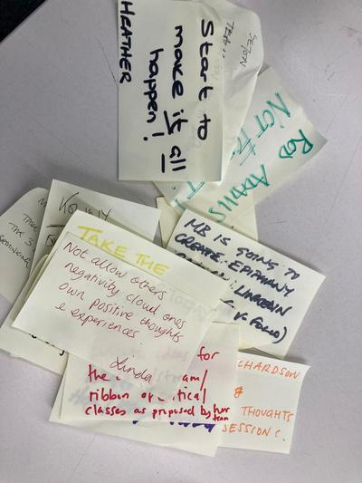

I’ll use this space to find the quiet in my head. To throw down thoughts. Half-baked ideas. Loose proposals. Threads that dangle in mid air, not quite attached yet. They’re more for me than anyone else. But pick them up and get in touch if they resonate with you.